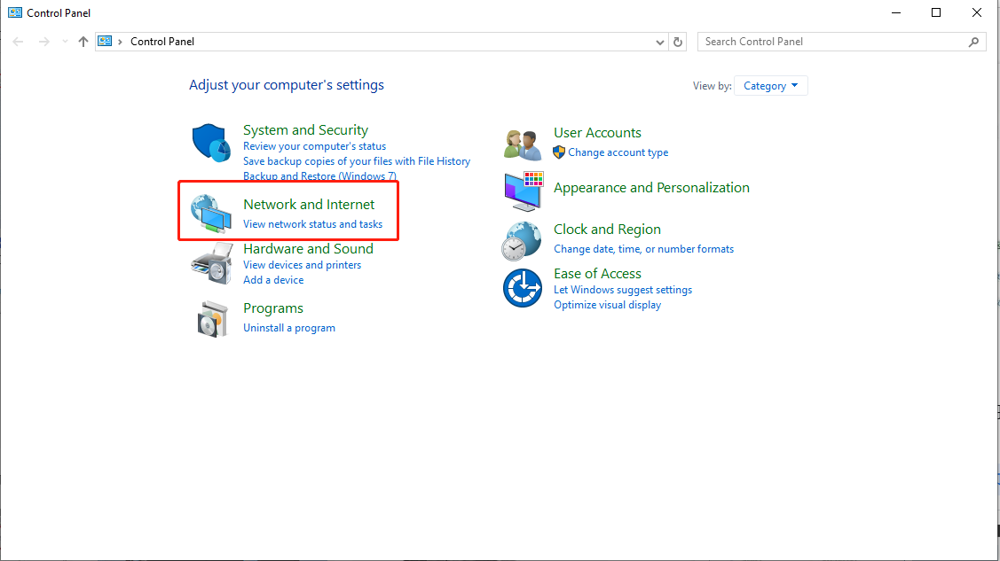
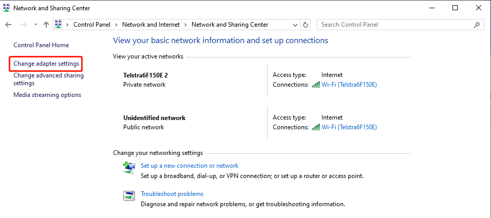
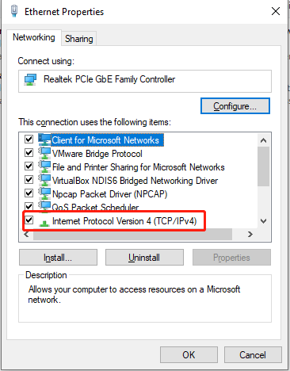
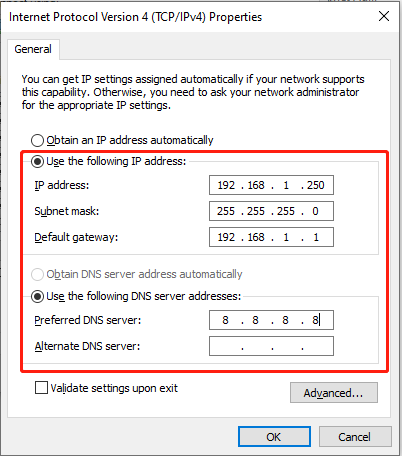
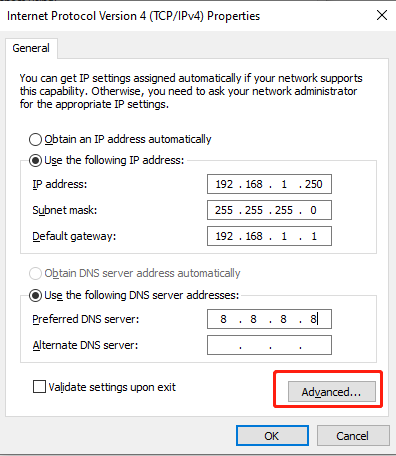
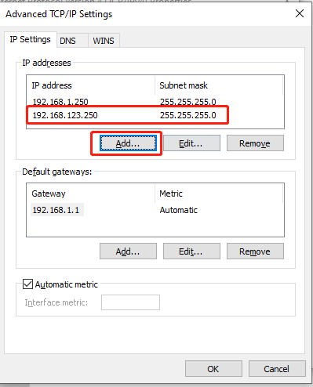
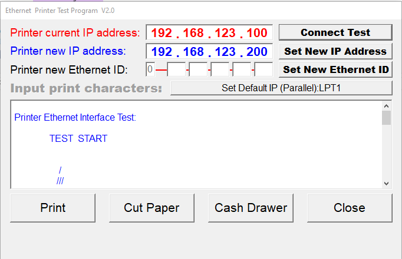

ArmPOS 打印机IP修改
2024年11月13日 · Charlie
请注意：此打印机只能在带有网线口的Windows上设置
ArmPos打印机驱动下载链接自检打印机，查看打印机的IP地址 (如 192.168.123.200)
现在去到 Windows 电脑的控制面板 (Control Panel)
点开 查看网络状态和任务 (View network status and tasks)
点开 更改适配器设置 (Change adapter settings)
右键 Ethernet —> Properties

双击 IPV4
先固定Windows 的IP地址 (如何查看当前电脑IP 地址，CMD 输入 ipconfig)
然后点开 Advanced
在下面中添加 打印机网段 如：192.168.123.250，添加完成后点确定
现在 Windows 电脑就可以和打印机通讯了，接下来只要用修改打印机IP的驱动修改打印机即可
